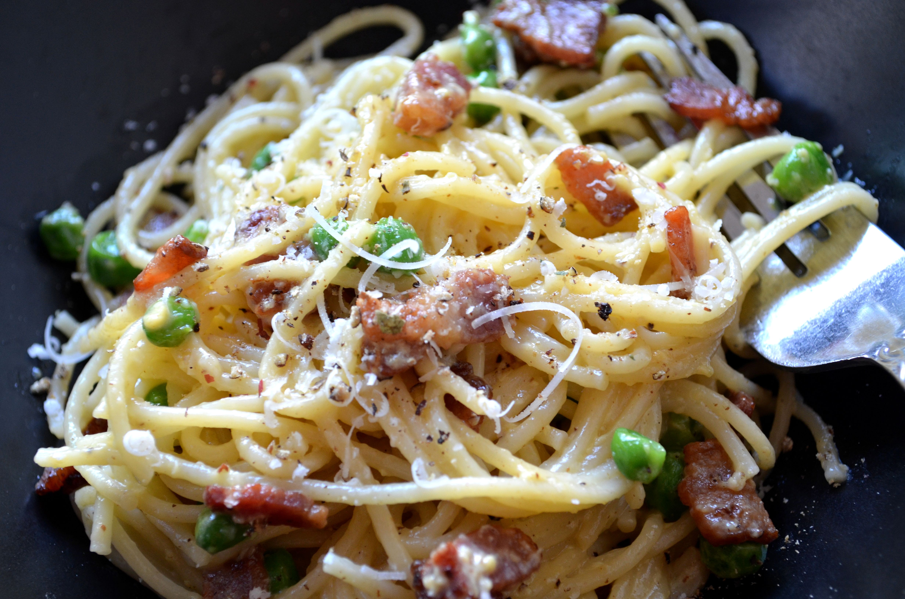

Pasta Carbonara

A savory and creamy pasta dish with bacon.
Prep: 15 mins
Cook: 15 mins
Total: 30 mins
Servings: 8
Yield: 8 servings
Ingredients
- 1/2 pound bacon, cut into small pieces
- 4 eggs, room temperature
- 1/4 cup heavy cream at room temperature
- 1 cup grated Parmesan cheese
- 16 ounces dry fettuccine pasta
- 1/4 cup butter, softened
- 1/4 cup chopped parsley
- ground black pepper to taste
Directions
- Cook bacon until crisp. Drain on paper towels.
- In medium bowl beat together eggs and cream just until blended. Stir in cheese and set aside.
- Cook pasta according to package directions. Drain and return to pan. Toss with butter until it is melted. Add bacon and cheese mixture and toss gently until mixed.